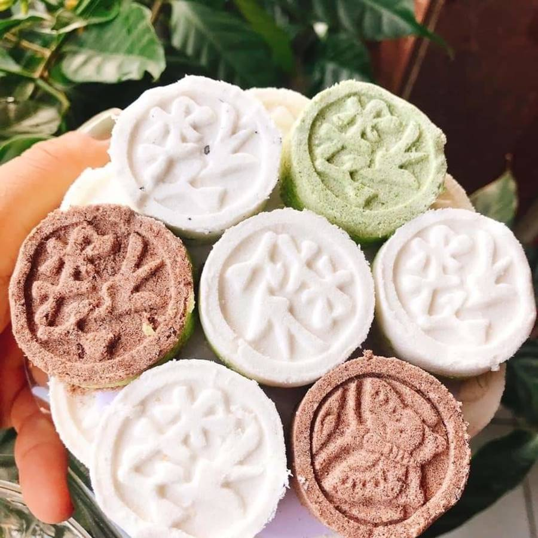

60.000 VNĐ / Hộp 400g
Bánh In là món bánh truyền thống nổi tiếng của Sóc Trăng, được làm từ bột nếp, đậu xanh, đường và hương lá dứa. Bánh có vị ngọt thanh, thơm dịu, mềm mịn và thường được dùng trong các dịp lễ, Tết hoặc làm quà biếu cho người thân, bạn bè.
Xuất xứ: Sóc Trăng
Khối lượng: 400g
Thành phần: Bột nếp, đậu xanh, đường, lá dứa
Hạn sử dụng: 30 ngày
Bảo quản: Nơi khô ráo, thoáng mát, tránh ánh nắng trực tiếp
Giao hàng: Toàn quốc.